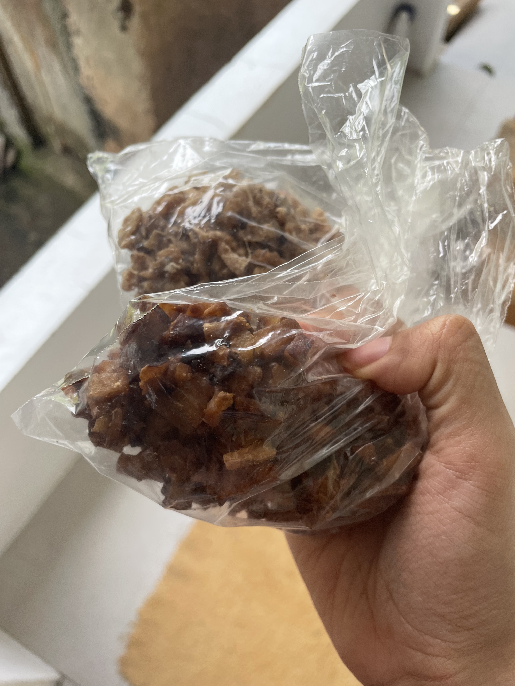

Jamaican Coconut Drops
Home

A traditional Jamaican dessert made from 5 simple ingredients. Originated from African ancestors and combined with traditions from Asia and Europe. They are called coconut "drops" because of the caramelised mixture dropped onto a surface to cool. A classic dessert found in nearly all Jamaican households!
Ingredients
- Ginger
- Brown sugar
- Optional: Cinnamon powder/leaves
- Vanilla extract
- Dry coconut
Steps
- Prepare the coconut by removing the coconut from its shell and cut into small cubes.
- Grate the ginger. Coconut drops have a generous amount of ginger.
- Cook the coconut. Add the cubed coconut and grated ginger to a pot with boiled water. Here you will also add the cinnamon leaves. If using cinnamon leaves!
- Add the sugar and vanilla to the same pot. If using cinnamon powder, add it to the pot as well.
- Assemble the drops. Once the liquid is sticky, scoop the coconut mixture with a spoon and drop onto parchment paper.
- Leave to harden for 15-20 minutes.